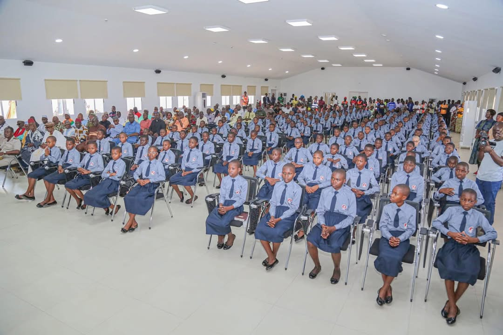
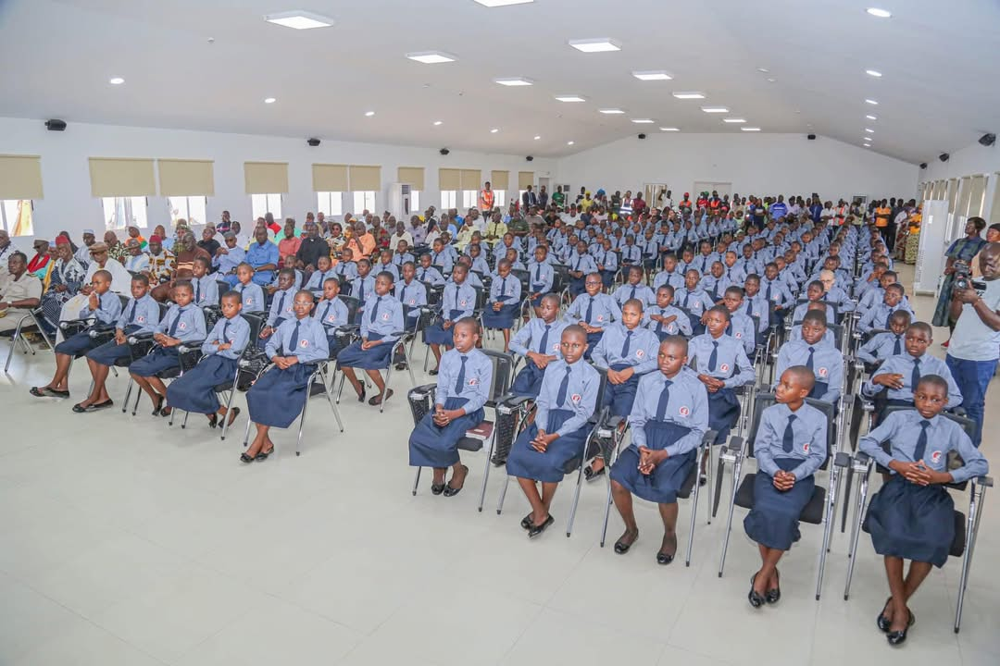
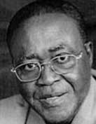
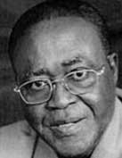

Bienvenue à sinématiali capitale de la mangue.


 


Sinématiali, au début, autant que l'on puisse s'en souvenir dans les temps modernes, sinématiali était une grosse bourgade bâtie en style soudanais avec des palais à étages. Mais En 1960, tout le bourg fut rasé, organisé et loti à la manière américaine, avec des rues qui se croisent en angle droit. Ancien chef-lieu de canton et, depuis 1961, chef-lieu de sous-préfecture, sinématiali bénéficie d’une situation géographique avantageuse puisqu’elle est située sur une voie goudronnée la mettant a égale distance de Korhogo et de Ferkessédougou. Sinématiali est une localité du nord de la Côte d'Ivoire elle est située à environ 592 km d’Abidjan, c'est une ville d’on la communauté est appelée Nafanra. Cette population pratique l’agriculture et a pour activité culturelle le Poro. Elle est le chef-lieu du département de Sinématiali, dans la région du Poro. L'autorité municipale de ladite ville est M. Donasso Abou Coulibaly, élu le 2 septembre 2023, la population y est essentiellement constituée de Sénoufos (Nafara) et Malinkés (Dioulas). Le département de sinématiali est subdivisé en quatre sous-préfectures que sont Sinématiali, Bahouakaha, Sediogo, et Kabgolodougou. En 2021 la population du département de sinématiali est estimée à environ 74 981 habitants.


Historique de la mairie de sinematiali.
Sinématiali devient commune en 1985, et depuis lors la ville de de sinématiali a connu 4 maires dans son histoire. Le premier maire de la commune de sinématiali est monsieur BEMA Dogoni Louis-julien, il est maire de 1985 à 2000. Ingénieur Agronome de profession,Ex 1er Vice-président du Conseil Général de Korhogo et ex-directeur général de la Sodesucre (Ferké 1). Commandeur dans l'ordre du mérite agricole, il a également été vice-président de Lcci, directeur général de la Société des caoutchoucs de Grand-Béréby (Sogb), directeur général de l’Orientation scolaire et professionnelle (Osp) et Pca de la Compagnie ivoirienne pour le développement des textiles (Cidt). Monsieur Bema Dogoni décède le 29 janvier 2018.
 

A partir de 2000 c'est monsieur TIEMOKO YADE COULIBALY qui succèdera à monsieur Bema dogoni (2000-2013).
Le banquier et homme politique Tiémoko Yadé Coulibaly, né le 21 juin 1940 à Sinématiali dans le Nord Côte d’Ivoire, Président Directeur général (PDG) et Président du conseil d’administration (PCA) de la Société générale des Banques de Côte d’Ivoire (SGBCI) devenue par la suite la Société générale, M. Tiémoko Yadé avec maestria, a occupé toutes ces fonctions de 1975 en 2021.
Après sa retraite, il est devenu à 84 ans, le nouveau Chef canton de Sinématiali depuis L’année 2024


NANDOH COULIBALY 2013-2023 Le Président du conseil d'administration (PCA) du Centre national de recherche agronomique (CNRA), M. Coulibaly Nandoh.

M. ABOU DONASSO COULIBALY 2023 (mandat en cours)
La mairie de sinematiali en image